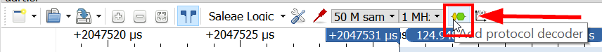
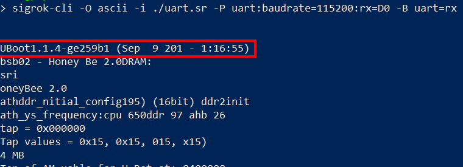
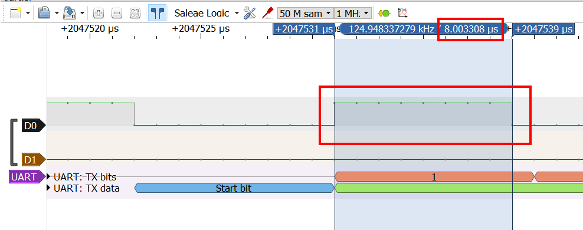
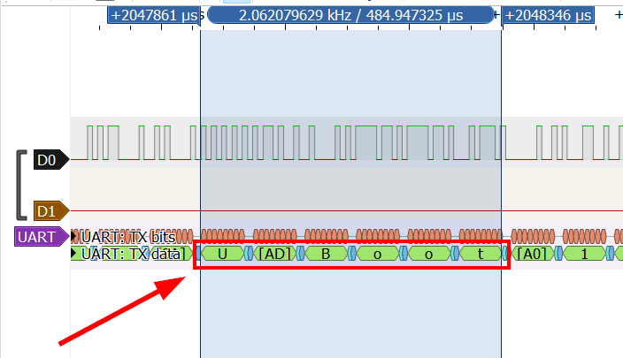

UART
What is it?
UART stands for Universal asynchronous receiver transmitter. Used for serial communications over a computer or peripheral device serial port.
UART peripherals are commonly integrated into many embedded devices. UART communication makes use of baud rate to maintain synchronism between two devices. The baud rate is the rate at which information is transferred in a communication channel.
With access to the UART, a user can see the bootloader and operating system logs.
Generally, the line is held high (at a logical 1 value) while UART is in idle state.
We call the most common configuration 8N1: eight data bits, no parity, and 1 stop bit.
Identifying UART ports
A UART pinout has four ports:
- TX (Transmit)
- RX (Receive)
- VCC (Voltage)
- GND (Ground)

To find UART there are multiple solutions:
- Search the Internet
- Check the PCB for pin labels
- Find likely candidates
- Using a multimeter
- Using a logic analyzer
- Follow PCB traces (almost always impossible)
Keep in mind that some devices emulate UART ports by programming the General-Purpose Input/Output (GPIO) pins if there isn't enough space on the board for dedicated hardware UART pins.
It is advised to capture the communication at 4 times the baudrate speed, to avoid decoding issues.
Using a multimeter
GNR pin
First, identify the GND pin by using the multimeter in continuity mode.
Place the black probe on any grounded metallic surface, be it a part of the tested PCB or not. Then place the red probe on each of the ports. When you hear a beeping sound, you found a GND pin.
VCC pin
Turn the multimeter to the DC voltage mode and set it up to 20V of voltage. Keep the black probe on a grounded surface. Place the red probe on a suspected pin and turn on the device.
If the multimeter measures a constant voltage of either 3.3V or 5V, you've found the VCC pin.
TX pin
Keep the multimeter mode at DC voltage of 20V or less, and leave the black probe on a grounded surface. Move the red probe to the suspected pin and power cycle the device. If the voltage fluctuates for a few seconds and then stabilizes at the VCC value, you've most likely found the TX pin.
This behavior happens because, during bootup, the device sends serial data through that TX pin for debugging purposes. Once it finishes booting, the UART line goes idle.
Rx pin
If you've already identified the rest of the UART pins, the nearby fourth pin is most likely the RX pin.
Otherwise, you can identify it because it has the lowest voltage fluctuation and lowest overall value of all the UART pins.
Using a logic analyzer
A logic analyzer is an electronic instrument that captures and displays multiple signals from a digital system or digital circuit.
To find the UART pins we will connect the pins to a logic analyzer and look for data being transmitted.
Hardware setup
Make sure any system you're testing is powered off when you connect the logic analyzer's probes to it to avoid short-circuiting.
- Connect the suspected TX pin to any channel of the logic analyzer.
- Connect one of your logic analyzer's GND pins to the PCB that you're testing GND pins so they share a common ground.
Software setup
PulseView / Sigrok
 In order to make Pulseview work on Windows host, you have to use Zadig driver: https://zadig.akeo.ie/
In order to make Pulseview work on Windows host, you have to use Zadig driver: https://zadig.akeo.ie/
- Click run on the top left corner in order to start the capture
- Once you get UART communication, you can add a "protocol decoder"

- Select the right channel for TX and RX
- Select the baudrate, parity bit, and frame size (most common, 8N1)
- Data format, for example "ascii" if ascii chars are intended (boot sequence, stacktrace, etc.)
Once you get an interesting capture, it is possible to save it and decode it using sigrok-cli, instead of PulseView GUI :

Saleae-based logic analyzer
This setup is for Saleae-based logic analyzer if you use a different one, refer to the constructor documentation.
- Open the Saleae software
- Create a new analyzer entry by pressing the plus (+) icon and selecting Async Serial (this is for UART).
- Select a serial channel (8 channels on Logic Analyser) and keep the default settings.
- Try with popular baud rates used in IoT devices (9600, 19200, 38400, 57600, 115200). Note that when you don't know the bit rate, you can select "Use Autobaud" and let the software work its magic.
- Save the configurations.
If you want to modify the speed and the duration:
- As a rule, you should sample digital signals at least four times faster than their bandwidth.
- With serial communications, which are generally very slow, a 50 kS/s sampling rate is more than enough, although sampling faster than this does no harm.
- As for the duration, 20 seconds is enough time for the device to power on and start transmitting data.
Now try with the popular baud rates with both the suspected pins and try to compare the results. If you find any readable text with one of the pins and the text makes some sense then that’s the TX pin.


Connect to serial port
WARNING
It's not a big deal if you confuse the UART RX and TX ports with each other, because you can easily swap the wires connecting to them without any consequences. But confusing the VCC with the GND and connecting wires to them incorrectly might fry the circuit.
Examples


Connection using a USB to TTL
Once the ports are connected, plug the adapter into your computer. You now need to find the device file descriptor. To do that, enter the following command: sudo dmesg.
Typically, it will be assigned to /dev/ttyUSB0 if you don't have any other peripheral devices attached.
Under Ubuntu or Debian, a non-root user cannot have access to serial ports such as ttyS0 or ttyUSB0 if he is not a member of the dialout group! The equivalent group on Arch-based distributions is uucp. In other words, you just have to add yourself to this group to have access.
- Ubuntu or Debian:
sudo usermod -a -G dialout $USER - Arch-based:
sudo usermod -a -G uucp $USER
Detect the baud rate
Most common baud rate
The most common baud rates for UART are 9600, 19200, 38400, 57600 and 115200.
A table of other used but less common baud rates can be found here: Here
Autodetect the baud rate using a script
# Download the script
wget https://raw.githubusercontent.com/devttys0/baudrate/master/baudrate.py
# Install serial dependency
pip2.7 install serial
# Run the script on "/dev/ttyUSB0"
python2.7 baudrate.py -p /dev/ttyUSB0
Using PulseView
It is possible to get baudrate using the duration of a bit periode, using PulseView or any other bus analysis tools :

The closest common baudrate is : 115200. Configure the decoder and you should see ascii chars :

Interact with UART
-
Command line tools to interact with UART:
-
Brute force a password protected UART:
import serial, time port = "/dev/ttyUSB0" baud = 115200 s = serial.Serial(port) s.baudrate = baud with open('/home/audit/Documents/IOT/passwords.lst', 'r') as f: lines = f.readlines() for pwd in lines: a = s.write(pwd.strip()) print("Pwd: {}".format(pwd.strip())) print("Sent {} bytes".format(a)) print("Result: {}".format(s.readline())) time.sleep(10) -
Interact with HydraBus
UART over BLE
It’s an emulation of serial port over BLE. The UUID of the Nordic UART Service is 6E400001-B5A3-F393-E0A9-E50E24DCCA9E. This service exposes two characteristics: one for transmitting and one for receiving.
- RX Characteristic (UUID: 6E400002-B5A3-F393-E0A9-E50E24DCCA9E) :
- The peer can send data to the device by writing to the RX Characteristic of the service. ATT Write Request or ATT Write Command can be used. The received data is sent on the UART interface.
- TX Characteristic (UUID: 6E400003-B5A3-F393-E0A9-E50E24DCCA9E) :
- If the peer has enabled notifications for the TX Characteristic, the application can send data to the peer as notifications. The application will transmit all data received over UART as notifications.